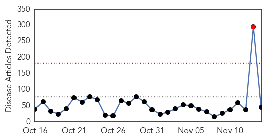
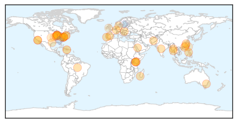
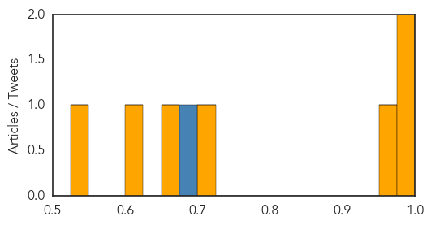

Unknown
30-Day Web Trend
1 alerts, 0 warnings

30-Day Twitter Trend
1 alerts, 0 warnings

Article Locations

Article Confidences

Top Articles:
- 0.994
- Portugal: Legionnaires’ Disease Alert
- 0.955
- Health Ministry asks nation’s nurses to call off strike due to “extraordinary” Legionella outbreak
- 0.938
- Poliovirus in South Sudan and Madagascar
- 0.917
- Chicago Tribune
- 0.917
- Chicago Tribune
- 0.917
- Chicago Tribune
- 0.917
- Chicago Tribune
- 0.917
- Chicago Tribune
- 0.917
- Chicago Tribune
- 0.917
- Chicago Tribune
- 0.917
- Chicago Tribune
- 0.917
- Chicago Tribune
- 0.917
- Chicago Tribune
- 0.917
- Chicago Tribune
- 0.917
- Chicago Tribune
- 0.917
- Chicago Tribune
- 0.917
- Chicago Tribune
- 0.917
- Chicago Tribune
- 0.917
- Chicago Tribune
- 0.917
- Chicago Tribune
- 0.917
- Chicago Tribune
- 0.917
- Chicago Tribune
- 0.917
- Chicago Tribune
- 0.917
- Chicago Tribune
- 0.917
- Chicago Tribune
- 0.917
- Chicago Tribune
- 0.901
- Unexplained, polio-like illness has paralyzed 75 kids
- 0.899
- the edge of knowledge
- 0.819
- Tuberculosis case detected at Cal State San Marcos
- 0.794
- UNICEF Denies Catholic Bishops’ Claim Kenyan Tetanus Vaccine Is Laced With Birth-Control Hormone
- 0.774
- CDC: Poor contact lens-care habits result in $175 million in direct healthcare costs
- 0.761
- Kenya : Medics warn tetanus has no cure, call for vaccination to save babies
- 0.712
- Heart disease linked to psoriasis, rheumatoid arthritis
- 0.700
- Deadly Latin American Bug Makes Its Way Into The US, ‘New AIDS Of The Americas’
- 0.695
- The most from the coast
- 0.693
- Spider Bites and Bee Stings
- 0.666
- The Tablet
- 0.663
- PED pops back up in southwestern Ontario
- 0.656
- Health : Success of school mobile clinics
- 0.645
- Each Year, Contact Lenses Give Nearly 1 Million People in the US Eye Infections
- 0.587
- UNDP, Government of Haiti provide immediate support to flood-affected victims - Haiti
- 0.547
- Nearly $1.2 Million Awarded to Improve Health Services Across West Virginia
- 0.515
- Department of Conservation warns of deadly deer disease
- 0.505
- Scientists unlock crucial mechanism driving colliding epidemics of smoking and tuberculosis
- 0.504
- The tense standoff between Catholic bishops and the Kenyan government over tetanus vaccines
Top Tweets:
- 0.716
- RT: People with heart disease or stroke are at HIGH RISK for developing complications from the flu. Get the flu shot! @CDC…
- 0.580
- RT: Very low public health threat related to avian flu A(H5N8) outbreak in turkeys in Germany. ECDC risk assessment: http://t.c…
Influenza
30-Day Web Trend
0 alerts, 0 warnings

30-Day Twitter Trend
0 alerts, 0 warnings

Article Locations


Article Confidences
Top Articles:
- 0.984
- Get your flu shot to protect yourself & your loved ones
- 0.977
- Grant Will Fund Research on New Flu Virus Found in Cows, Pigs
- 0.974
- Nasal mist flu vaccine may be best option for children
- 0.719
- Scientists Can Predict The Spread Of Disease Using Wikipedia
- 0.662
- Public Health's New Tool Is Wikipedia
- 0.612
- Mapping Evolution Of How We've Died Over The Last 100 Years
- 0.529
- NM mathematician aims to predict flu with the internet
Top Tweets:
- 0.699
- FluFactFriday: So far most circulating flu viruses this season are influenza A (H3N2) and influenza B viruses. http://t.co/T0Bj6tR2PG